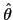
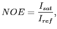
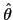
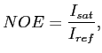

Next: The transformed relaxation equations Up: Theory Previous: Theory Contents Index
For the minimisation of the model-free models a chain of calculations, each based on a different theory, is required. At the highest level the equation which is actually minimised is the chi-squared function
where the index
is the summation index ranging over all the experimentally collected relaxation data of all residues used in the analysis;
 belongs to the relaxation data set R for an individual residue, a collection of residues, or the entire macromolecule and includes the
belongs to the relaxation data set R for an individual residue, a collection of residues, or the entire macromolecule and includes the
 ,
,
 , and NOE data at all field strengths;
, and NOE data at all field strengths;
 is the back-calculated relaxation value belonging to the set R
is the back-calculated relaxation value belonging to the set R ;
;  is the model parameter vector which when minimised is denoted by

; and 
is the experimental error.
is the model parameter vector which when minimised is denoted by

; and 
is the experimental error.
The significance of the chi-squared equation ( ) is that the function returns a single value which is then minimised by the optimisation algorithm to find the model-free parameter values of the given model.
) is that the function returns a single value which is then minimised by the optimisation algorithm to find the model-free parameter values of the given model.
Edward d'Auvergne 2011-01-10